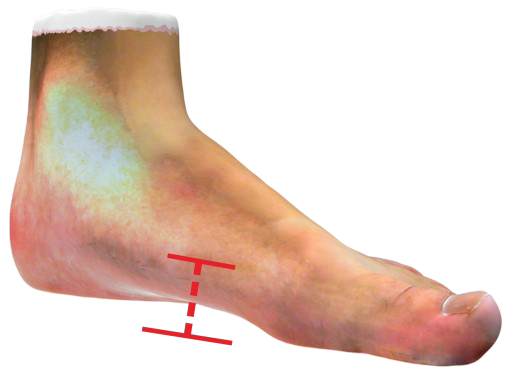

三维脚型检测报告
个人信息
| 姓名 | 性别 | 电话 | 编号 |
| 身高 | 体重 | 年龄 | 日期 |
检测结果
脚型类型：
${foot.type}


埃及脚的脚型最普遍的，大脚趾比其他四根脚趾长，大脚趾到小趾
脚型类型：埃及脚依次变短，中国人普遍是这种脚型，该脚型比较适合穿斜头鞋，最好穿 特殊型的鞋保护脚趾，同时在美观方面，埃及脚也是最好看的脚型；
希腊脚又称美人脚，不少美女都符合第二脚趾长的特征，更有趣的是，自由女神像、希腊诸神雕像都是这种脚型，特点是：第二根脚趾比
其他脚趾长，脚板较瘦长，建议鞋款：尖头鞋、圆尖头鞋；
罗马脚：“罗马脚”也称为正方形，这种脚型5根脚趾长度都差不多，没有特别凸出的脚趾，看起来就像正方形一样，"罗马脚"在选鞋时，可以挑选圆头、方头鞋，而拥有"罗马脚"的人较罕见，他们特别适合跳
芭蕾舞。
脚长

266 左脚 右脚 265.2
推荐鞋码
43
脚宽

266 左脚 右脚 265.2
围度

左脚
兜跟围
329
跗围
256
跖围
228
右脚
兜跟围
329
跗围
256
跖围
228
足弓高

足弓高度 22